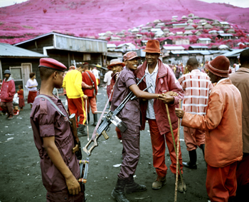
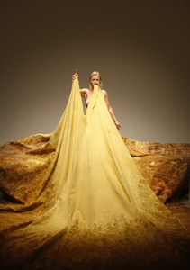

To each one his own. Venice, Berlin, London, Paris, Moscow, Prague, Liverpool and many others: each one of them has got its own Biennale of Art. For years now, the capital that gave birth to some of the 20th century’s most revolutionary artists has been lagging behind other leading European cities in terms of contemporary art. It’s finally time to get back on tracks.
From September 6th to October 31st, 2011, Dublin will host the most ambitious art exhibition ever staged in Ireland, titled Terrible Beauty – Art, Crisis, Change and the Office of Non-Compliance, a title that stems from Yeat’s poem, “Easter 1916”. “When Jota and I came on board it seemed to us necessary and obvious to directly address ‘the elephant in the room’, that is, the current economic state of both Ireland and the world today,” said Christian Viveros-Fauné, one of the curators. “An exhibition like ours might speak to how crisis and change can serve as catalysts for creativity, possibly even cultural renewal, and the significant new possibilities that can be squeezed out of tough times.”
According to Viveros-Fauné, Ireland has incredible artists and galleries that have and are making significant strides in the international art scene, “but the art market here is not as robust as it is in other European countries. This is not a reflection on the talent but on the health of the visual art industry here. We have strong ambitions to change this.”
For a newly exhibition, Dublin Contemporary 2011 is every bit as good as its continental predecessors, with more than 90 Irish coming from the seven continents. Moreover, “Dublin Contemporary includes a much larger national representation than any other global biennial I can think of,” said Viveros Fauné. “Frankly, we thought that contemporary Irish artists deserved to have their work sit cheek by jowl with that of major international artists.”
The main location of the exhibition will be within the historical grounds of the National Concert Hall, on Earlsfort Terrace. “When DC2011 was in the early planning stages we always said we wanted to be a truly city-wide exhibition and we knew we wanted to do something you don’t get at other biennials,” commented Lesley Tully, Project Director. She remarked that a lot of time was spent investigating all types of spaces from warehouses on the docks to underused city-centre spaces. However, “as soon we knew that Earlsfort Terrace was a viable option a natural exhibition foot print began to emerge.”
Outdoor sculptures will be displayed in the adjacent Iveagh Gardens, while The Annex will be the setting of an array of sound works and partner institutions in the city will host specific exhibitions.
It is not coincidental that curators Viveros-Fauné and Jose Castro were chosen for an audacious project like this: “I knew the projected needed a person with much more than just curating skills. They were exceptionally daring and counter-intuitive in their approach – they are established but not part of the establishment,” said Tully.
The Office of Non-Compliance at Earlsfort Terrace “will function as a promoter of ideas and include ad-hoc, accessible structures for discourse around art and its place in society”, said Viveros-Fauné. The idea of the Office is to plug into the significantly liberative power of art to talk to issues that both inhere within the premises of the exhibition and overflow the natural limits of any show, according to Viveros-Faunè.
Dublin Contemporary 2011 will run from September 6th to October 31st. A full-day ticket will cost €15, while it will be €35 for a three-day ticket. More details are available at https://www.dublincontemporary.ie/.